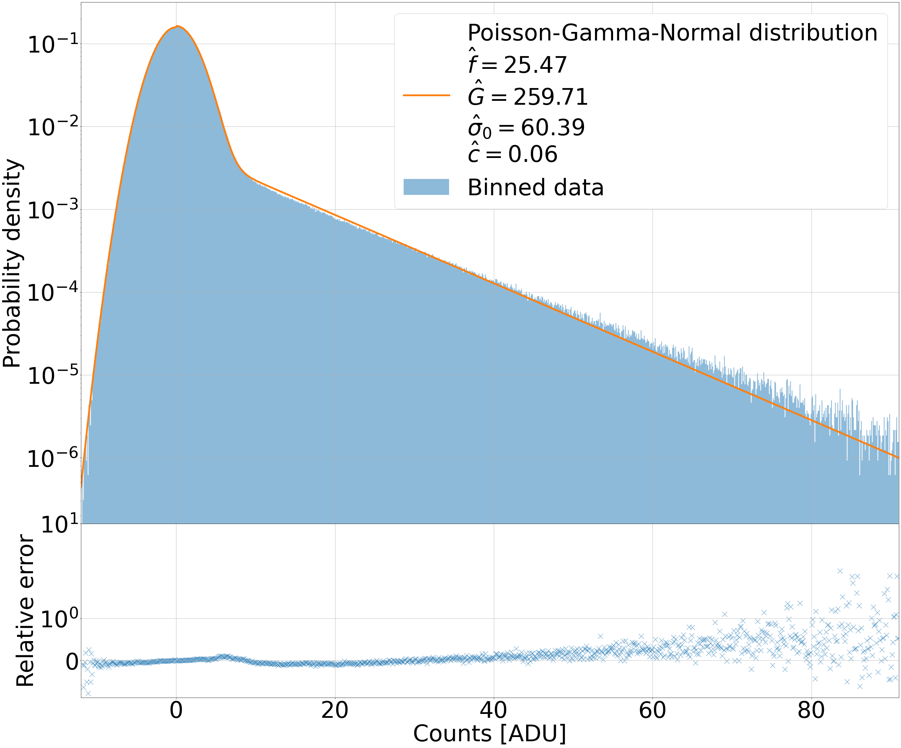
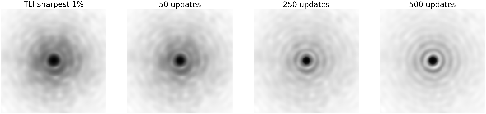
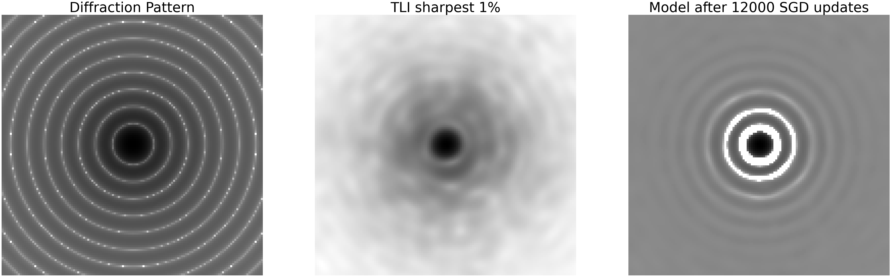
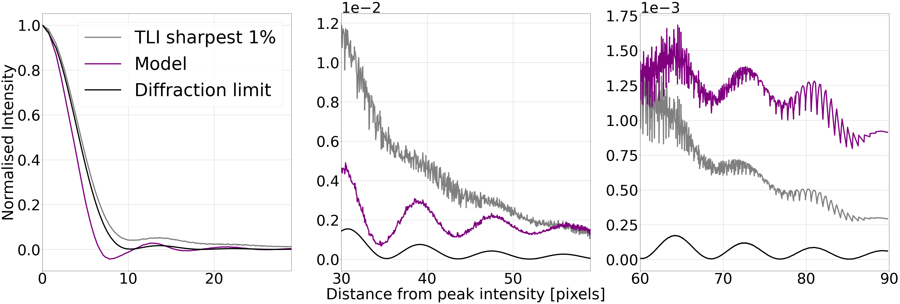
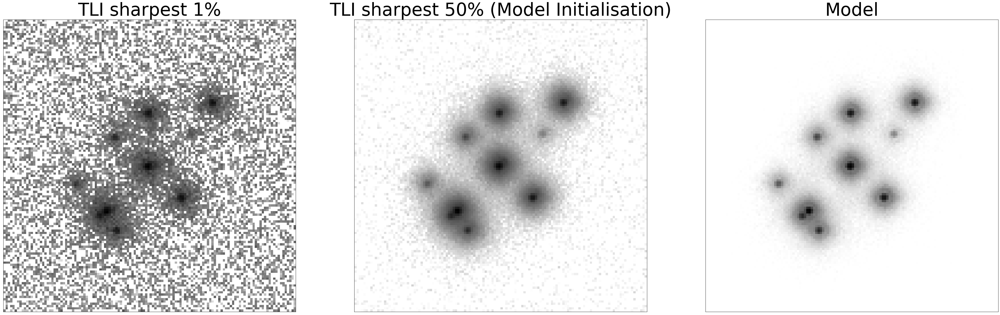
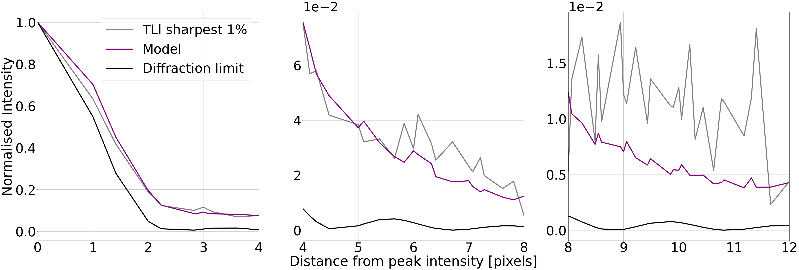
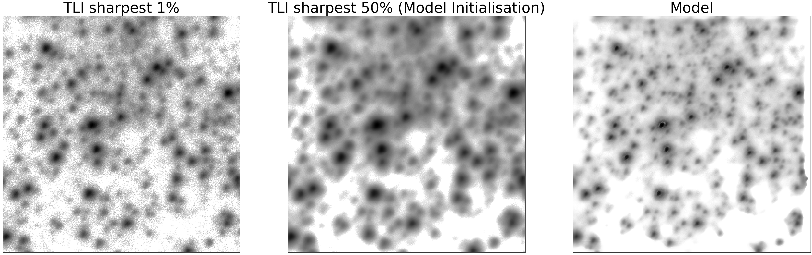
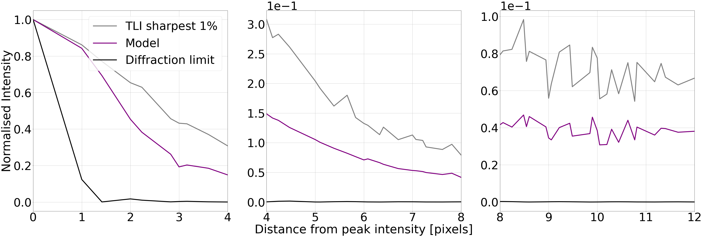
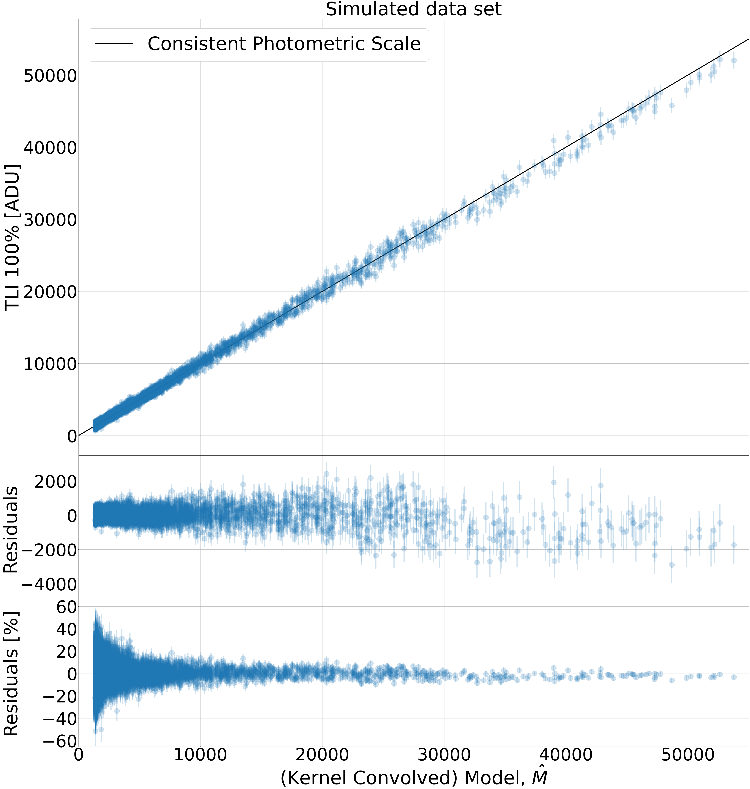
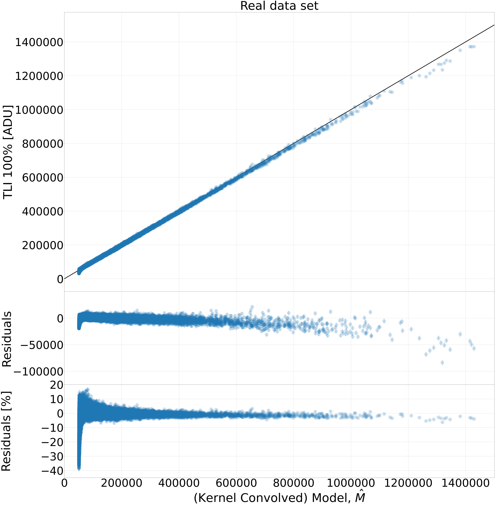

The Thresher: التصوير الحظي بلا هدر
الملخص
في التصوير الحظي التقليدي (TLI)، تُلتقط صور متعاقبة كثيرة للمشهد نفسه بكاميرا ذات معدل إطارات عال، وتُستبعد جميع الصور عدا الأكثر حدة قبل بناء صورة الإزاحة والجمع النهائية. نعرض هنا خط أنابيب بديل لتحليل الصور، هو —The Thresher—، لهذه الأنواع من البيانات، قائم على إزالة الالتفاف العمياء متعددة الإطارات على نحو متصل. يستفيد هذا الخط من جميع البيانات المتاحة للحصول على أفضل تقدير للمشهد الفلكي ضمن حدود حاسوبية معقولة؛ ولا يتطلب تقديرات قبلية لدوال انتشار النقطة في الصور، ولا معرفة بمصادر نقطية في المشهد يمكن أن توفر مثل هذه التقديرات. والأهم من ذلك أن المشهد الذي يستهدف إرجاعه هو أمثلية دالة هدف قياسية مبررة مبنية على دالة الاحتمال. ولأنه يستخدم مجموعة الصور الكاملة في الرزمة، فإن The Thresher يتفوق على TLI في نسبة الإشارة إلى الضجيج؛ وبما أنه يأخذ دوال PSF الخاصة بالإطارات المفردة في الحسبان، فإنه يحقق ذلك من غير فقد في الاستبانة الزاوية. نبرهن فعالية خوارزميتنا على بيانات محاكاة وعلى صور حقيقية ملتقطة بكاشف CCD مضاعف للإلكترونات، حصلنا عليها عند التلسكوب الدنماركي ذي القطر 1.54 م (المستضاف لدى ESO، La Silla). ونستكشف أيضا القيود الحالية للخوارزمية، ونجد أنه، لاختيار نموذج الصورة المعروض هنا، تُدخَل لاخطيات في التدفق إلى المشهد المُرجع. يمكن الاطلاع على التطوير الجاري للبرمجية في https://github.com/jah1994/TheThresher.
keywords:
تقنيات: معالجة الصور – طرائق: تحليل البيانات – برمجيات: تطوير – أجهزة رصد: كواشف1 مقدمة
ينتج الغلاف الجوي تغيرات زمنية ومكانية عالية التردد في دالة انتشار النقطة (PSF) للصور الفلكية الأرضية، مع مرور الخلايا الحملية المضطربة فوق فتحة التلسكوب. ويؤدي أثر المتوسط الزمني لتقلبات PSF في الرصود التقليدية إلى تدهور الاستبانة بسرعة، وينتج صورا ضبابية محدودة الحزمة. وتشمل فئة من التقنيات الهادفة إلى تعويض ذلك الحصول على عدد كبير من التعريضات القصيرة للغاية، القريبة من المقياس الزمني للتغيرات الجوية. تمتلك هذه التعريضات القصيرة منفردة نسبة إشارة إلى ضجيج منخفضة ودوال PSF معقدة جدا، لكنها توفر قيودا قوية على المشهد المحدود بالحيود عندما تُستخدم صور كثيرة بصورة جماعية.
طُرحت فكرة استغلال معلومات الاستبانة العالية في التعريضات القصيرة أول مرة بواسطة Labeyrie (1970)، وقد نشأت منذ ذلك الحين أدبيات غنية حول هذا الموضوع. وعلى وجه الخصوص، تقوم تقنية واسعة الانتشار سنسميها التصوير الحظي التقليدي (TLI) (Law et al., 2006) على اشتقاق Fried لاحتمال الحصول على إطار ذي رؤية “محظوظة” على نحو غير اعتيادي11 1 مقياس لضبابية الصورة الفلكية الناتجة عن الاضطراب الجوي. عند التقاط صور كثيرة بسرعة. أي إن تشوهات جبهة الموجة التي يسببها الغلاف الجوي ستقترب أحيانا، بمحض المصادفة، من إلغاء عيوب التلسكوب. تُحدد هذه الصور الأفضل، وتُزاح، وتُجمع، بينما تُلقى بقية البيانات في سلة المهملات. يحظى TLI بشعبية كبيرة لأنه سهل الفهم والتنفيذ، وقابل للتنفيذ حاسوبيا، ويمكن استخدامه مع عتاد زهيد جدا. غير أن هذه التقنية ليست حقا زهيدة، لأنها تؤدي إلى قدر كبير من البيانات المهدرة. تعتمد نتائج TLI النموذجية على أفضل نسبة مئوية فقط (أي الأكثر حدة) من الصور المكتسبة، وقد ركز التقدم على تحسين طريقة جمع الصور أو اختيارها لرفع كفاءة الطريقة (Staley et al., 2010; Mackay, 2013, على سبيل المثال).
كان الدافع إلى العمل المعروض هنا هو الشعور (الصحيح) بأنه، عند التعامل مع البيانات على نحو ملائم، لا يمكن للأغلبية المستبعدة من البيانات في رزمة تصوير TLI أن تكون ضارة بتقييد المشهد الفلكي! في سياق TLI، السبب الأساسي في أن التخلص من البيانات يساعد هو أن خطوة تحليل البيانات الجوهرية هي الجمع بالإزاحة والإضافة للصور، وهو أمر (رغم شيوع استخدامه في علم الفلك) غير مبرر عندما تتغير دالة انتشار النقطة بسرعة.
الطريقة التي نعرضها هنا، وهي The Thresher، نكهة جديدة لفكرة قديمة. وهي حالة خاصة من فئة واسعة من الخوارزميات تسمى إزالة الالتفاف العمياء (Ayers and Dainty, 1988; Campisi and Egiazarian, 2017). وتستند على نحو وثيق، بوجه خاص، إلى طريقة تحليل الصور بإزالة الالتفاف العمياء متعددة الإطارات على نحو متصل (OMFBD) لدى Hirsch et al. (2011). غير أن خوارزميتنا تختلف عن هذا العمل السابق في وجوه مهمة عدة: 1) تنفذ The Thresher دالة احتمال ذات دافع فيزيائي ومبررة لصور التعريض القصير؛ 2) تنفذ خوارزميتنا إجراء انحدار تدرج عشوائي متينا قائما على أحدث خوارزميات التحسين؛ و3) هي عامة تماما فيما يتعلق باختيار نموذج الصورة ودالة الاحتمال، لأنها تستخدم أدوات التفاضل التلقائي. وتجعل النقطتان 1) و2) على وجه الخصوص The Thresher ملائمة للغاية للتعامل مع بيانات التصوير الفلكي الواقعية الخافتة والضجيجية ذات معدل الإطارات العالي.
في هذا العمل، نصف النظرية الكامنة خلف خوارزميتنا وتفاصيل تنفيذنا الخاص. والأهم من ذلك أننا نبرهن التحسينات الكبيرة على TLI التي تتيحها هذه التقنية باستخدام بيانات محاكاة وبيانات حقيقية من كاميرات تصوير سريعة من نوع CCD مضاعف للإلكترونات (EM). ومن القيود الأساسية في TLI أن نسبة الإشارة إلى الضجيج في الجمع النهائي مرتبطة عكسيا باستبانته (أي كلما تحسنت الاستبانة ساءت نسبة الإشارة إلى الضجيج). ونبين أن الأمر لا يلزم أن يكون كذلك؛ إذ تمتلك The Thresher إمكانية إرجاع صورة بنسبة إشارة إلى ضجيج تعود إلى مجموعة البيانات بأكملها وباستبانة أفضل الصور نفسها.
تُنظم هذه المخطوطة كما يأتي. في القسم 2، نصف مسألة الاستدلال والخوارزمية المطورة لحلها. ونعرض نتائجنا على بيانات المحاكاة والبيانات الحقيقية في القسمين 3 و4 على التوالي. وفي القسم 5، نفحص القيود الحالية للخوارزمية ونحدد نطاق التحسينات اللاحقة. ويعرض القسم 6 خلاصاتنا.
وأخيرا، لمساعدة القارئ على متابعة الترميز المُدخل في الأقسام الآتية، ندرج جدولا للرموز وتعريفاتها في الملحق (الجدول 2).
2 صياغة المسألة
2.1 إزالة الالتفاف العمياء متعددة الإطارات على نحو متصل
نبدأ بكتابة نموذج لبياناتنا التصويرية. لأي تعريض قصير، ، في مجموعة بيانات التصوير الحظي (LI) التي تضم صورة، يكون النموذج المعقول لتوزيع الضوء عند أي بكسل معطى هو
| (1) |
تنص المعادلة 1 على أن كل صورة تتولد من التفاف صورة عالية الاستبانة و‘حقيقية’ ما، ، مع نواة ضبابية مجهولة ما، ، وخلفية سماوية مضافة ما، . نفترض في هذا العمل كله أن ثابتة زمنيا، وأن كلا من و ثابت مكانيا. ويُبرر الأخير لبيانات LI ذات المساحة الزاوية الصغيرة التي نستخدمها، على رتبة مقياس الرقعة متساوية الخواص، حيث تكون الرؤية ثابتة تقريبا عبر مجال الرؤية.
بالنظر إلى نموذج إحصائي ما للضجيج في بياناتنا التصويرية، يمكننا كتابة دالة احتمال ل معطاة متجه معاملات النموذج لدينا، . نُبقي الترميز خفيفا بغية الوضوح. لكل صورة ، يُنمذج كمصفوفة مربعة من البكسلات ذات حجم يحدده المستخدم، ويكون عددا قياسيا. ويُنمذج كمصفوفة من البكسلات ذات الأبعاد نفسها كصور البيانات. وبافتراض الاستقلال بين الصور، والاستقلال بين البكسلات، فإن دالة الاحتمال لمجموعة بياناتنا بأكملها، ، ليست إلا حاصل ضرب احتمالات البكسلات المفردة،
| (2) |
ندخل لتمثيل قائمة الكميات المعروفة الأخرى التي يكون الاحتمال مشروطا بها، مثل معاملات نموذج ضجيج الكاشف.
ومن أجل الملاءمة العددية، من المفيد بدلا من ذلك العمل باللوغاريتمات، مما يحول حاصل الضرب أعلاه إلى مجموع. عندئذ يمكننا تعريف الخسارة الكلية على أنها سالب لوغاريتم احتمال بياناتنا التصويرية معطاة معاملات النموذج
| (3) | ||||
حيث إن هي الخسارة المرتبطة بصورة مفردة.
للأسف، توجد مضاعفات عملية تمنعنا من تصغير المعادلة 3 مباشرة للحصول على تقدير الاحتمال الأعظم (MLE) لمعاملات نموذجنا. أولا، تتكون مجموعات بيانات LI من آلاف الصور، وليس من العملي تحميلها كلها في ذاكرة الحاسوب في الوقت نفسه. ثانيا، والأهم، في سياق إزالة الالتفاف العمياء هذا، لكل صورة ، تكون و منحلّتين تماما، إذ توجد أعداد غير محدودة من التوليفات الممكنة لهذه المعاملات يمكنها توليد البيانات المرصودة (المعادلة 1).
اقترح Hirsch et al. (2011) خوارزمية تكرارية متصلة لا تحتاج إلى الوصول إلا إلى صورة واحدة في أي لحظة، وتجعل المسألة قابلة للمعالجة، وتتألف من خطوتين لكل صورة في مجموعة بياناتنا:
| (4) |
| (5) |
في الخطوة (i)، يُبقى التقدير الحالي للمشهد، ، ثابتا، وتُستدل قيمتا و الفريدتان اللتان تصغران الخسارة من أجل المعطاة. وفي الخطوة (ii)، تُستخدم هذه التقديرات الجديدة لنواة الضبابية والخلفية السماوية لإعادة تقييم الخسارة. ويُحسب تدرج الخسارة بالنسبة إلى ، ثم تُحدَّث بخطوة هبوط أشد واحدة ذات حجم خطوة ، مما يعطينا تقديرا جديدا للمشهد عالي الاستبانة، . وبهذه الطريقة، يمكننا تحديث تقديرنا ل تتابعيا بتكرار الخطوتين (i) و(ii) لكل صورة يمكننا الوصول إليها. وإذا لزم الأمر، يمكن إجراء عدة مروريات على بيانات التصوير (أي إعطاء مجموع قدره تحديثا).
بما أن و فريدتان لكل ، فينبغي استدلالهما بتصغير الخسارة لأي صورة معطاة. أما فهي مشتركة بين جميع الصور، ولذلك ينبغي إجراء تحديث واحد فقط في الخطوة (ii). وهذا التحديث مثال على الانحدار التدرجي العشوائي (SGD؛ انظر Bottou et al. 2018 للاطلاع على عرض ممتاز). في الأوضاع التي لا يكون فيها حساب تدرج الخسارة الكلية بالنسبة إلى معاملات نموذجنا، ، عمليا، يتيح لنا SGD إحراز تقدم بحساب تقريبات عشوائية للتدرج الكلي، . ورغم أن هذه التقريبات إلى ضجيجية، فإن التحسين بواسطة SGD يحقق عادة تقدما أوليا سريعا، لأنه عند الابتعاد عن الأمثلية، من المرجح جدا أن يكون ل الإشارة نفسها التي ل. وسيكون هذا التقدم عموما حساسا جدا لحجم الخطوة، ولا سيما عند الاقتراب من الأمثلية، لكن مع حجم خطوة متناقص على نحو ملائم22 2 هذا أمر خاص جدا بالمسألة، ويتطلب عادة مواءمة تجريبية. وعلى الرغم من شعبية SGD وتاريخه الطويل، فإن الاختيار الأمثل لحجم الخطوة لمسألة تحسين معطاة يظل مسألة بحثية مفتوحة.، يمكن إثبات تقارب SGD في البيئات المحدبة وغير المحدبة (Bottou and others, 1998). غير أنه من المفيد عمليا إنهاء التحسين مبكرا، إذ قد تظهر مشكلات في تمثيل النموذج مع إزالة التفاف المشهد.
ومن أجل تثبيت التحديثات العشوائية ل وتخميدها تلقائيا، نقترح تعديلا عمليا للخطوة (ii) بإدخال التحديث الآتي في خطوة SGD لدينا،
| (6) |
حيث إن و هما المتوسطان الجاريان (غير المتحيزين) المتناقصان أسيا للتدرج ولمربعات التدرجات على التوالي، ويعملان كتقديرين للمتوسط وللتباين (غير المتمركز) للتدرجات. وهذا مثال على تحديث Adam الشائع، الذي يضبط معدل التعلم للمعاملات تكيفيا بطريقة حساسة لتاريخ تدرجها.
نحيل القارئ إلى Kingma and Ba (2014) لتعريفات كيفية حساب و. وهناك، نتبنى القيم المقترحة للمعاملات الفائقة. ويشمل ذلك قيمة ، وهي عدد صغير يضاف إلى مقام المعادلة 6 لتحسين الاستقرار العددي.
من المفيد التفكير في الكمية على أنها شبيهة بنسبة الإشارة إلى الضجيج (SNR) للتدرجات. يبني تحديث Adam زخما للمعاملات ذات التدرجات غير الصفرية المستمرة، ويفرض احتكاكا عندما ينمو تباين التدرجات السابقة. وهذا مفيد، لأن المعاملات ذات ‘SNR’ منخفضة ينبغي أن تتصف بالتذبذب حول أمثلية ما (أو أنها غير حساسة للبيانات فحسب)، ولذلك ينخفض حجم خطوتها تلقائيا.
في مسألتنا، تمتلك معاملات حرة كثيرة، تُنمذج كبكسلات على شبكة، مرتبطة بكل من الخلفية السماوية والمصادر الفلكية موضع الاهتمام. وبشرط أن نتمكن من تقدير مستوى السماء بثقة باستخدام نموذجنا (المعادلة 1)، فإن تواريخ تدرج البكسلات المرتبطة بهذه الخلفية الملساء فقط (أي المناطق في غير المأهولة بالمصادر) ينبغي عادة أن تتمركز حول 0. ومن ثم تُخمَّد أحجام خطواتها الفعالة طبيعيا بواسطة التحديث في المعادلة 6. وعلى العكس من ذلك، ينبغي أن تمتلك البكسلات المرتبطة بالمصادر اتساقا أكبر في إشارة التدرج وتباينات أدنى، ولذلك يُخمَّد حجم خطوتها الفعال بدرجة أقل حدة. ولهذا أثر كلي في تثبيت إزالة الالتفاف، إذ يساعد على كبح تضخيم الضجيج33 3 ستنتقل اللا دقات في أي من الخطوتين (i) أو (ii) إلى الخطوة التالية ضمن حلقة تغذية راجعة موجبة. في تحديثات .
ميزة رئيسية أخرى لهذا الإطار القائم على SGD هي أن المعامل الفائق الوحيد الذي يحتاج إلى بعض المواءمة التجريبية هو معدل التعلم، . ويمكن ضبط هذا المعدل على نحو مستقل لكل معامل، وفي هذه المسألة نوصي بقوة بأن يُفعل ذلك! وكما جادلنا أعلاه، ينبغي السماح للبكسلات المرتبطة بالمصادر الفلكية في بأن تتغير أكثر من غيرها، إذ إن البيانات هناك هي الأكثر إفادة، ومن ثم ينبغي إسناد معدلات تعلم أولية أكبر إلى هذه المعاملات. علاوة على ذلك، تمتلك ميزة إضافية تتمثل في حصر تقريبي لحجم التحديثات لكل معامل في كل خطوة SGD. وبهذه الطريقة، تؤدي وظيفة شديدة الشبه بمخطط قص التحديثات الذي استخدمه Lee et al. (2017) لتثبيت إزالة التفاف الصور الفلكية الضجيجية.
2.2 نموذج ضجيج بواسون-غاما-طبيعي لبيانات EMCCD
بعد أن كتبنا نموذجا لبياناتنا التصويرية وخوارزمية لاستدلال معاملاته، نحتاج الآن إلى اختيار دالة خسارة مناسبة (أي سالب لوغاريتم احتمال) تمثل اعتقادنا بشأن ضجيج الرصد. في هذا العمل، ننظر في رصود مكتسبة باستخدام كواشف CCD مضاعفة للإلكترونات (EMCCD).
من السمات المميزة للمشاهد الفلكية مداها الديناميكي الهائل؛ فبعض الأجسام شديدة السطوع، وكثير غيرها يكون عادة خافتا جدا. وستوجد الأجسام موضع الاهتمام في صور LI المفردة عند نسب إشارة إلى ضجيج منخفضة جدا، مع وقوع كثير منها دون عتبة كشف معقولة في أي تعريض معطى. علاوة على ذلك، فإن مجموعات التعريضات القصيرة بما يكفي في LI غنية بالمعلومات، إذ تحتوي على معلومات عالية التردد (مكانيا) تُفقد في التعريضات التقليدية الطويلة المحدودة الحزمة. وتوجد هذه المركبات عالية التردد عموما عند أدنى الشدات، ومن ثم ستكون حساسة جدا للضجيج. وفي جميع المصادر عدا الأكثر سطوعا، لا تنطبق التقريبات الغاوسية لإحصاءات العد البواسونية على هذه الصور الشحيحة الفوتونات، وكما سنرى، تُدخل عملية مضاعفة الإلكترونات الخاصة بكواشف EMCCD مصدرا إضافيا للضجيج. وينبغي لنموذج إحصائي دقيق يدمج معرفتنا الفيزيائية بعمليات توليد الضجيج في كواشف EMCCD أن يسمح لنا باستغلال هذه المعلومات على نحو أفضل، والاستفادة الكاملة من طريقة الاحتمال الأعظم لإجراء استدلالات متينة ودقيقة من بياناتنا التصويرية.
اشتق كل من Korevaar et al. (2011) وHirsch et al. (2013)، بصورة مستقلة، دالة الاحتمال نفسها ذات الدافع الفيزيائي لبيانات EMCCD. وتُبنى دالة كثافة الاحتمال (PDF) هذه من التفافات 1) ضجيج الفوتونات البواسوني وأحداث الشحنة الشاذة، و2) التضخيم المتسلسل للشحنة في سجل EM، الذي تقربه توزيعة غاما جيدا، و3) ضجيج قراءة موزع طبيعيا. بعد ضبط (ارجع إلى الجدول 1 لتعريفات معاملات الكاشف هذه)، بوحدات ADU-1، يأخذ احتمال بواسون-غاما-طبيعي (PGN) هذا الصيغة
| (7) |
حيث يدخل نموذج صورتنا (المعادلة 1) عبر
| (8) |
لاحظ أن هي دالة خطوة هيفيسايد وأن هي دالة بسل المعدلة من الرتبة الأولى.
بالنسبة إلى تعريضات المفردة ونموذج صورتنا (المعادلة 1)، تكون دالة الخسارة تحت نموذج الضجيج هذا ببساطة مجموع سوالب لوغاريتمات الاحتمال لكل بكسل،
| (9) |
وتكون الخسارة الكلية على جميع الصور مساوية ل
| (10) |
| Parameter | Description and units |
|---|---|
| f | A/D conversion factor ( / ADU) |
| G | Electron-multiplying (EM) gain ( / ) |
| Readout noise () | |
| c | Spurious charge () |
| q | Quantum efficiency (dimensionless) |
2.3 التحقق من نموذج الضجيج ومعايرته
سنقيّم الآن مدى قدرة نموذج الضجيج PGN على تمثيل خصائص الضجيج في صور EMCCD حقيقية اكتُسبت بكاميرا TCI ‘الحمراء’ في التلسكوب الدنماركي ذي القطر 1.54 م (DK154) (Skottfelt et al., 2015). وبالطبع، تجلب بيانات العالم الحقيقي مشكلات العالم الحقيقي، ولا يُمثَّل توزيع أعداد صور DK154 على الصور الخام المخزنة للتحليل تمثيلا جيدا بالمعادلة 7.
أولا، وبسبب قيود التخزين، تُكمَّم قيم البكسلات في الصور الخام إلى أعداد صحيحة، رغم أنها تُقرأ بدقة 16 بت. لذلك نقوم ب‘ترجيف’ الصور الخام قبل المعايرة اللاحقة بإضافة عدد عائم، مسحوب عشوائيا من التوزيع المنتظم ، إلى كل قيمة بكسل صحيحة. ويستبدل هذا بالصورة الخام المتقطعة تمثيلا تماثليا معقولا كما رصدته الكاميرا أصلا. وتحت قيمتي و المنطبقتين على بيانات DK154، يكون عدم اليقين المرتبط الذي يدخله هذا الإجراء أصغر بنحو رتبة مقدار واحدة من ضجيج القراءة، ويمكن تجاهله بأمان.
ثانيا، كما في صور CCD التقليدية، ينبغي تصحيح الانحيازات المنهجية وفروق الكفاءة الكمية بين البكسلات. لذلك، وبعد الترجيف، نطرح الانحياز ونطبق تصحيح المجال المسطح على جميع صور EMCCD. غير أن خطوة إضافية يجب اتخاذها لمعايرة صور EMCCD، إذ يوجد انجراف ملحوظ في مستوى الانحياز، تسببه عملية تبديد الحرارة على الرقاقة المرتبطة بالقراءة السريعة والتيار الكبير، وهو فريد لكل صورة على حدة وينبغي تصحيحه. ويمكن قياس مستوى الانحياز المنجرف هذا بمقارنة قيم البكسلات في مناطق المسح الزائد غير المضاءة للصورة المعطاة مع إطار الانحياز الرئيسي44 4 كل قيمة بكسل في إطار الانحياز الرئيسي هي المتوسط المبتور لقيم البكسل المناظرة من 1000 صورة انحياز، حيث تُرفض أعلى 5% من العدادات للبكسل المعطى. ويمكن اعتبار إطار الانحياز الرئيسي عديم الضجيج، لأن تغير متوسط البكسلات بين صور الانحياز الرئيسية أقل برتبة مقدار من ضجيج القراءة (القسم 5.2.1 من Skottfelt et al. (2015)). وبما أن هذه البكسلات تتأثر هي أيضا بالتضخيم المتسلسل في EM، اقترح Harpsøe et al. (2012) استخدام المتوسط المبتور لتوزيع الفرق في هذه العدادات البكسلية كتقدير لانجراف مستوى الانحياز. وعلى وجه التحديد، يؤخذ المتوسط المبتور على أنه المتوسط المحسوب بعد رفض أعلى 5% من العدادات، وتُطرح هذه القيمة من إطار العلم ذي الصلة.
نلاحظ أنه، من حيث المبدأ، يمكن إدخال معامل حر آخر في نموذج كاشفنا لتمثيل انجراف مستوى الانحياز هذا، بحيث تُحسَّن قيمته بعد ذلك، مما يستفيد من قوة نموذج الضجيج ذي الدافع الفيزيائي لدينا. وهذا أدق بالتأكيد من النهج الاستدلالي المبين أعلاه، لكنه صعب التنفيذ عمليا لأن سطح الاحتمال بالنسبة إلى هذا المعامل غير متصل، إذ إن الاحتمال مقطعيا حول نقطة يحددها هذا المعامل، ولذلك ينبغي استخدام نهج تحسين غير قائمة على التدرج.
2.3.1 معايرة معاملات نموذج الضجيج
التقطنا تسلسلا من 500 صورة مظلمة DK154 بإعدادات الكاميرا نفسها المستخدمة في هذا العمل كله. ومن هذه الصور نستطيع معايرة جميع معاملات نموذج الضجيج لدينا عدا واحد. ولأن هذه الصور غير مضاءة، يمكن افتراض أن أي ‘إشارة’ تعود حصرا إلى أحداث الشحنة الشاذة، وهو ما يكافئ التعويض ب في المعادلة 7. ومن ثم لا نستطيع تحديد ، وهو عموما صعب القياس جدا، ولذلك نعتمد قيمة مصنع الكاشف طوال هذا العمل.
لرزمة من صورة مظلمة ملتقطة بكاميرا EMCCD ذات معاملات كاشف ، نصغر دالة الهدف الآتية،
| (11) | ||||
حيث تُنمذج جميع معاملات الكاشف الحرة كثوابت مجهولة. وبما أنه يوجد سجل قراءة واحد، فهذا تقريب معقول ل و و. ولأغراض هذا العمل، نقصر تحليلنا على جزء مركزي قدره بكسل من كاميرا DK154، يكون فوقه ثابتا تقريبا أيضا (انظر الشكل 3 في Harpsøe et al. (2012)). حُسنت المعادلة 11 بخوارزمية Adam (الموجزة في القسم 2.1، لكننا هنا نستخدم التدرج الكامل، ، عند التحديث). ويُسقط نموذج PDF (المعادلة 7) المعامل بتقديرات MLE فوق مدرج تكراري مُطبَّع للبيانات في الشكل 1، مع تحديد عروض الصناديق باستخدام النهج في Knuth (2006). وقُصر مجال البيانات المراد تصنيفها في صناديق على ما له كثافة احتمال متوقعة لا تقل عن تحت تقدير MLE لنموذج الضجيج. وبما أن هناك نقطة بيانات بالمجمل، فإن ذلك يقي من أعداد كبيرة من الصناديق الفارغة (أو شبه الفارغة). ويُرسم الفرق النسبي بين النموذج والبيانات المصنفة في اللوحة السفلى. نرى في الشكل 1 أن نموذج الضجيج PGN يلتقط السمات غير المتماثلة وذات الذيل الثقيل لتوزيع بياناتنا الناشئة عن الشحنات الشاذة المضخمة بEM. غير أننا نشدد على أنه لا ينبغي بأي حال اعتبار هذا النموذج ‘حقيقة’؛ فهو تقريب فقط. ومع ذلك، فهو تمثيل عملي فعال، ذو دافع فيزيائي، ودقيق عموما لبياناتنا.
بعد أن أصبح لدينا الآن نموذج ضجيج دقيق ومفصل للكاشف، بمعاملات أداة معايرة، يمكننا الانتقال إلى معالجة مسألة إزالة الالتفاف.

2.4 القيود والتنظيم
نظرا للطبيعة سيئة الوضع لمسألة إزالة الالتفاف العمياء، قد يكون من المفيد إدراج قيود وحدود تنظيم/عقوبة (أي قبليات بايزية) على معاملات النموذج لتقييد نطاق حلولها الممكنة، أو دفع معاملات النموذج نحو قيمة مفضلة قبليا عندما لا تكون البيانات مفيدة.
2.4.1 عدم السلبية
في أدبيات إزالة الالتفاف، من الشائع جدا تقييد قيم البكسلات في المشهد الكامن لتكون غير سالبة. وبالنسبة إلى مسألتنا، في حين أن تقييد البكسلات في نواة الضبابية بقيم غير سالبة أمر معقول، فإن صحة فرض عدم السلبية على أقل وضوحا. ففي أي صورة LI معطاة، ستوجد على الأرجح مصادر خافتة عند عتبة الكشف أو دونها تمتزج في الخلفية السماوية. وفي وحدات المشهد المستدل النهائي، قد تكون لهذه المصادر تدفقات negative، وستتأثر بقوة بأي قيد عدم سلبية.
عمليا، ينبغي أن يكون هذا القرار مدفوعا، جزئيا على الأقل، بنموذج الضجيج المعتمد. يبدو من المعقول إجبار على أن تكون غير سالبة عند استخدام نموذج الضجيج PGN، لأن ذلك سيحمي من مشكلات عددية محتملة في تقييمات الاحتمال، إذ إنه بموجب نموذج الضجيج المحدد هذا ينبغي لنموذج الصورة أن يكون غير سالب في كل موضع؛ فنموذج الضجيج PGN لا يسمح بإلكترونات ضوئية سالبة55 5 لهذا السبب، نقيّد أيضا عند استخدام نموذج الضجيج PGN، ولا سيما أننا نطرح السماء دائما من لتخفيف الارتباط المضاد بين و. سيكون مستوى الخلفية التفاضلي بين هذا النموذج المطروح منه السماء والبيانات غير سالب، مما يبرر هذا القيد، الذي سيضمن، بالاقتران مع قيود عدم السلبية على و، أن غير سالبة دائما.. أما عند استخدام خسارة خطأ تربيعية بسيطة (كما نفعل في الاختبارات على الصور المحاكاة عديمة الضجيج في القسم 3.1)، فلا يمكن تقديم حجة ‘فيزيائية’ كهذه لعدم سلبية . في هذه الحالة، النقطة الحاسمة هي أن البيانات لا تقيّد القيمة المطلقة لأي معامل معطى في ، بل تقيّد فقط القيم النسبية للمعاملات. ولذلك، نحن في هذا العمل لا نفرض عدم السلبية على في الاختبارات على البيانات عديمة الضجيج (القسم 3.1)، لكننا نفرض هذا القيد في الاختبارات على البيانات المنمذجة بنموذج الضجيج PGN (القسمان 3.2 و4).
2.4.2 تقدير الاحتمال الأعظم المعاقب
تضخيم الضجيج هو المشكلة الدائمة لكثير من خوارزميات إزالة الالتفاف، ولا يزداد الأمر إلا سوءا بسبب الانخفاض الشديد في نسبة الإشارة إلى الضجيج في بيانات التعريض القصير لدينا. لذلك من الشائع إدراج حدود عقوبة في دالة الخسارة للحماية من نوى ضبابية وتقديرات مشهد ضجيجية بإفراط.
نظرا للطبيعة المنحلة لمسألة الاستدلال، فإن الدقة التي نستطيع بها تحديد كل نواة من النوى ستحدد بقوة كيفية تحديثنا ل في كل خطوة. وبالفعل، أظهرت لنا الخبرة التجريبية الواسعة المكتسبة من تطوير The Thresher واختباره أن جميع مشكلات إعادة بناء تقريبا يمكن ردها إلى ضعف استدلال النواة. إن أساس دالة دلتا المستخدم لنمذجة النواة مرن للغاية، لكن ذلك يأتي على حساب زيادة فرط الملاءمة، مما يؤدي إلى نوى ضجيجية بإفراط، ولا سيما عندما تكون نسبة الإشارة إلى الضجيج منخفضة (Becker et al., 2012; Bramich et al., 2016, تقدم بعض الأمثلة الإرشادية من أدبيات تحليل صور الفروق شديدة التشابه). وهذه مشكلة، لأن الضجيج في النواة سينتقل إلى التقديرات اللاحقة للمشهد. وللحماية من ذلك، ندرج معيار L1 على بكسلات النواة كحد عقوبة في دالة الخسارة، وهو يدفع بكسلات النواة نحو 0 ما لم تكن البيانات مفيدة. ومن ثم يمكننا إعادة كتابة الخطوة (i) (المعادلة 4) على النحو
| (12) |
حيث إن هو عدد البكسلات في كل صورة ، و ثابت مواءمة يحدد قوة التنظيم، ويجب ضبطه تجريبيا. وعمليا، نجد أن القيم في المجال معقولة، مع احتياج البيانات ذات نسبة الإشارة إلى الضجيج الأدنى إلى تنظيم أقوى للنواة.
ومن الشائع أيضا إدراج حدود عقوبة على المشهد تعكس معتقداتنا عن خصائص الصور. وهذه الحدود تعاقب عادة الترددات العالية (مثل التدرجات الحادة) في المشهد، ولذا يكون لها أثر تنعيمي ويمكن أن تساعد في كبح الضجيج. وتشمل الخيارات الشائعة معيار L1 أو L2 على تدرجات الصورة. غير أن هذه حدود العقوبة في الواقع تفضل المشاهد الضبابية (Levin et al., 2011). إضافة إلى ذلك، فهي عرضة لإدخال آثار مترابطة في نموذج الصورة، وتنتج حقول تدرجها دوال PSF معقدة تطرح تحديات لأغراض أي قياسات لاحقة على الصورة المعاد بناؤها. وتمثل هذه القضايا تحديات جدية للفلكي، وتميز حالة استخدامنا عن بيئة إعادة بناء الصور العامة. ففي علم الفلك، يجب أن يكون هدف إزالة الالتفاف مفيدا دائما تقريبا لغرض إجراء قياسات، وغالبا ما تكون PSF واحدة من الأشياء التي نهتم بقياسها أكثر من غيرها! ووجود نموذج عملي مفيد لPSF مهم للغاية لمجموعة متنوعة من المهام اللاحقة التي من المرجح أن نهتم بها (مثل كشف المصادر، والقياس الفلكي الموضعي، وقياسات التدفق).
أخيرا، كما نوقش في Vio et al. (2005)، فإن معاقبة الترددات العالية لنموذج الصورة يمكن أن تبطل فعليا جهودنا في تنفيذ وصف إحصائي دقيق للضجيج يحاول استغلال هذه المعلومات منخفضة الشدة وعالية التردد. صُممت حدود العقوبة هذه لضمان هيمنة الترددات المنخفضة/المتوسطة على إعادة البناء. وبينما لا يهم ذلك في بيانات التصوير محدودة الحزمة، فقد يؤثر بشدة في الأداء على بيانات LI، لأنه يمنعنا من استغلال المزايا الفريدة التي تقدمها هذه التعريضات القصيرة بالكامل في تقييد التقدير عالي الاستبانة للمشهد.
وخلاصة القول إننا نجد عمليا أنه ما دام تقدير نواة الضبابية دقيقا، فإن حدود العقوبة البسيطة هذه للمشهد إما غير ضرورية، أو تخلق مشكلات أكثر مما تحل.
2.4.3 لا يوجد قيد مجموع إلى واحد
توجد انحلالية ضرب متبقية بين نوى الضبابية و. وقد وجدنا أن التحديثات المتتالية ل تزيد مقياسها الفوتومتري، وينخفض مقياس نوى الضبابية تبعا لذلك من أجل ملاءمة البيانات (المعادلة 1). ولا يسبب ذلك أي مشكلات للنتائج المعروضة هنا، لكن في التطبيقات التي يكون فيها حفظ المقياس الفوتومتري للبيانات في الصورة المعاد بناؤها مهما، مثل قياسات تدفقات المصادر (غير المعايرة)، يمكن تطبيق قيد مجموع إلى واحد على بكسلات نواة الضبابية. كذلك، ومع أنه ليس مشكلة صادفناها، فمن المتصور أن تنشأ مشكلات عددية مع صغر مقياس النوى أكثر، مما يقدم دافعا إضافيا إلى نوع من التنظيم أو القيد. ولهذه الأسباب، سنجرب تنفيذ مثل هذه السمة في تطبيقات مستقبلية لخوارزميتنا.
2.5 الخوارزمية وتفاصيل التنفيذ
نرسم الشفرة الكاذبة لThe Thresher أدناه (الخوارزمية 2.5). إن استدلال نواة الضبابية والخلفية التفاضلية في الخطوة (i) لكل صورة هو عنق الزجاجة الحاسوبي في الخوارزمية. وقد حظيت هذه المسألة باهتمام متجدد في علم الفلك في سياق تحليل صور الفروق (DIA)، المعروف أيضا باسم طرح الصور، في مطلع Legacy Survey of Space and Time (Ivezić et al., 2019)، وتوجد خوارزميات شائعة متنوعة (Alard and Lupton, 1998; Bramich, 2008; Zackay et al., 2016, على سبيل المثال). غير أن هذه النهج كلها تفترض نموذجا غاوسيا للضجيج في بيانات التصوير، يُستفاد منه لحل المسألة تحليليا، ولا يمكن تعميمها للتعامل مع احتمال PGN (المعادلة 7) المناسب لصور EMCCD ذات التعريض القصير لدينا. ولذلك، نبني نهج حل النواة لدينا على خوارزمية PyTorchDIA (Hitchcock et al., 2021)، التي تعيد صياغة مسألة DIA كمسألة تحسين، مما يجعلها عامة بالنسبة إلى اختيار دالة الهدف. وكما يوحي الاسم، بُنيت هذه الشفرة ضمن إطار تعلم الآلة PyTorch (Paszke et al., 2019)، وتستخدم الأدوات القوية فيه، مثل التفاضل التلقائي وحسابات الالتفاف المسرعة بوحدات GPU والمحسنة للغاية، لجعلها عالية الأداء.
مثل PyTorchDIA، تستخدم The Thresher أيضا PyTorch لحساب تدرجات دالة الهدف تلقائيا بالنسبة إلى معاملات نموذج الصورة. ونؤكد مجددا أن ذلك لا يجلب مزايا في الكفاءة الحاسوبية فحسب. فبفضل قدرات التفاضل التلقائي هذه، تكون The Thresher عامة تماما فيما يتعلق باختيار نموذج الصورة ونموذج الضجيج. وعلى الرغم من أننا نركز في هذه الورقة على حالة صور EMCCD، تستطيع The Thresher أن تتعمم مباشرة للعمل مع كواشف أخرى ذات معدل إطارات عال وخصائص ضجيج مختلفة جدا، مثل الجيل التالي من أجهزة sCMOS (Qiu et al., 2013; Steele et al., 2016; Walker, 2020).
ينبغي أن نلاحظ أن التفاف مع نواة (مربعة) غير معرف للبكسلات في الواقعة ضمن نصف عرض النواة من حوافها. لذلك، عند ملاءمة و في الخطوة (i) من الخوارزمية، لا تدخل بكسلات الحافة هذه في و في الخسارة. ثم، لضمان أن تحافظ المُحدَّثة على الأبعاد الأصلية لصور في الخطوة (ii)، يجب أن نضيف حشوا إلى عند لفها مع . استخدمنا في هذا العمل حشوا صفريا ساذجا، وقد يؤدي هذا إلى "آثار حافة" في الصورة المعاد بناؤها؛ فبينما ينبغي أن يكون مستوى الخلفية في قريبا من الصفر، فهو ليس صفرا تماما، وأي مصادر تقع على حواف الصورة قد تتأثر بقوة. وهذا الحشو عملية حساسة لكنها ضرورية، لأنه من دونه ستصبح أصغر فأصغر عند كل تكرار في كل مرة تُلف فيها مع جديدة.
كذلك، ومن أجل إبقاء حجم مصفوفة النواة معقولا، نُحاذي كل صورة مع إلى أقرب بكسل صحيح في كل تكرار. ويتجنب ذلك الحاجة إلى الاستيفاء بين قيم البكسلات، إذ إن أي عدم محاذاة بدقة دون بكسلية بين و ستلتقطه (Bramich, 2008). وبينما ينبغي أن تكون الإزاحات الصحيحة بين الصور دائما تقريبا أصغر من نصف عرض النواة، ومن ثم لن تؤثر في الملاءمة في الخطوة (i)، فإن أي إزاحة، بصرف النظر عن حجمها، ستؤثر في التحديث في الخطوة (ii)، لأن البكسلات "المفقودة" حول حواف الصورة يجب أن تُستبدل للحفاظ على أبعاد كل صورة . وكما في الحشو الصفري المذكور آنفا، نختار مرة أخرى استبدال هذه البكسلات المفقودة بأصفار كتقدير خشن لمستوى السماء في تصوير التعريض القصير، مما سيسهم أيضا في أي آثار حافة في الصورة المعاد بناؤها.
The Thresher {algorithmic}[1] \Stateالدخل: تيار من الصور من أجل \Stateالخرج: الصورة المعاد بناؤها \State(المشهد) هيئ بوصفها أشد حدة من صور TLI المزاحة والمجموعة، و(اختياريا) اطرح تقديرا ما لخلفيتها السماوية \State(المشهد) اضبط بحيث تكون متناسبة مع \State(النواة) اضبط حجم مصفوفة النواة و \State\For مروريات على البيانات \State\Whileتتوفر صورة أخرى \Stateحاذ مع إلى أقرب بكسل صحيح \State(i) \State(ii) \EndWhile\EndFor\Stateالنهاية \State\Returnآخر تقدير
3 اختبارات الصور المحاكاة
نختبر خوارزميتنا أولا على محاكاة مفصلة لمجموعة بيانات تصوير حظي. يشبه هذا التلسكوب الاصطناعي DK154، مع حجم المرآة نفسه، لكن بمقياس بكسل قدره 0.05 ثانية قوسية لكل بكسل، بدلا من أخذ العينات الحقيقي لكاميرا LI في DK154s البالغ 0.09 ثانية قوسية لكل بكسل. تمتلك كاميرا DK154 ‘الحمراء’ مرشحا عريض الحزمة بطول موجي فعال قدره نانومتر، ولذلك نعتمد هذا طولا موجيا لهذه المحاكاة أحادية اللون.
3.0.1 محاكاة بيانات التصوير الحظي
استخدمنا حزمة HCIPy (Por et al., 2018) لتوليد شاشات الطور الجوي اللازمة لمحاكاة دوال PSF المعقدة في LI. واعتمدنا نموذجا أحادي الطبقة مولدا بطريقة بثق شاشة الطور اللامتناهية الطول لAssémat et al. (2006)، التي توفر نهجا كفؤا في الذاكرة لتوليد شاشات طور واقعية ومتطورة زمنيا كما قد تُرصد على مدى تشغيل LI طويل. واختيرت ظروف الرصد لتكون مشابهة لظروف الرؤية ‘الجيدة’ في La Silla، عند 0.6 ثانية قوسية، الموافق لمعامل Fried، سم عند 800 نانومتر. واستخدمت بيانات GSM الأرشيفية لضبط المقياس الخارجي للاضطراب على م، وسرعة الرياح على م/ث (Martin et al., 1998).
تنتشر موجات ضوئية مستوية، تتكون من مركبات حقيقية وتخيلية، عبر هذا النموذج الجوي وتقع على فتحة تلسكوب دائرية قطرها م. ثم يُستحصل نمط البقع اللحظي المرصود على الكاشف عند المستوى البؤري للتلسكوب بتطبيق تحويل فورييه على جبهة الموجة هذه وأخذ عينات أدنى لها إلى مقياس البكسل الملائم، عند 0.05 ثانية قوسية لكل بكسل.
يمكن حساب زمن الترابط لأنماط البقع المرتبطة بهذا النموذج الجوي أحادي الطبقة على أنه مللي ثانية (Tubbs, 2003). وعمليا، يأخذ التلسكوب الدنماركي ذو القطر 1.54 م عادة تعريضات 100 مللي ثانية، ولذلك سيحدث قدر من التوسيط الزمني. ولمحاكاة دوال PSF المرتبطة بكل تعريض 100 مللي ثانية، نأخذ لذلك متوسطا زمنيا لعدد 100 من أنماط البقع المأخوذة عند فواصل 1 مللي ثانية.
وبعد أن أصبح لدينا محاكاة لPSF، يمكننا الآن ملء مجموعة من الصور بمصادر نقطية بالطريقة الآتية.
(i) نعرّف أولا شبكة بكسلات ، ونختار أن تُملأ ب10 مصدرا نقطيا.
(ii) تُسحب التدفقات (بوحدات ) عشوائيا من لكل مصدر.
(iii) تُوزع مواضع دون البكسلية لهذه المصادر ال10 عشوائيا عبر الصورة، مع تجنب المناطق القريبة من الحواف. ويُنقل المصدر الأشد سطوعا إلى مركز الصورة تماما.
(iv) في كل صورة، تُقاس PSF المتوسطة زمنيا على 0.1 ث وفق تدفق (ii) عند موضع (iii) على الشبكة المحددة في (i).
(v) ثم يُضاف مستوى سماء قدره 0.1 إلى كل صورة.
(vi) أخيرا، لكل بكسل في كل صورة عديمة الضجيج، تُسحب قيم ADU عشوائيا من PDF الخاص بPGN (المعادلة 7)، مع ()، و ()، و ()، و ()، و. ويفترض هذا أن جميع الإسهامات من الشحنات الشاذة تساوي الصفر، وأن الكفاءة الكمية كاملة، وأن الآثار الأداتية مثل انجراف مستوى الانحياز لكل إطار قد صُححت تصحيحا تاما.
بهذه الطريقة، نولد رزمة من 3000 تعريضات محاكاة مدة كل منها 100 مللي ثانية.
3.1 اختبارات على صور عديمة الضجيج
قبل نشر خوارزميتنا على صور فلكية واقعية الضجيج وخشنة العينات، سنقيّم أولا ما تستطيع تعلمه من بيانات تصوير عالية معدل الإطارات ومثالية وعديمة الضجيج وجيدة العينة. ولهذا الاختبار، نستخدم مخزننا من دوال PSF القصيرة التعريض وعديمة الضجيج البالغ عددها 3000، والمولدة بمقياس بكسل قدره 0.013 ثانية قوسية.
هُيئت صورة النموذج باستخدام أشد 1% حدة من التعريضات المزاحة والمجموعة. يبين الشكل 2 كيف يتحسن هذا التقدير للمشهد عالي الاستبانة مع تحديثات SGD المتعاقبة. شغلنا خوارزميتنا لما مجموعه أربع مروريات (أي ما يكافئ 12,000 تحديث SGD) على مخزن الصور عديمة الضجيج، وفي الشكل 3 نرسم نمط Airy المحدود بالحيود، وأشد 1% حدة من التعريضات المزاحة والمجموعة، والنموذج الذي أرجعته خوارزميتنا بعد 12,000 تحديث. وبما أن البيانات عديمة الضجيج، اعتمدنا خطأ تربيعيا بسيطا لدالة الخسارة (أي (البيانات - النموذج)2). وتحت دالة الخسارة هذه، لا نعتمد أي قيد عدم سلبية على نموذج المشهد. وبما أن البيانات عديمة الضجيج، لا نحتاج إلى فرض أي تنظيم L1 على بكسلات النواة. هُيئ حجم خطوة SGD بقيمة ، وضُبطت مصفوفة النواة لتكون بحجم بكسل66 6 في حالة البيانات عديمة الضجيج ودالة خسارة الخطأ التربيعي البسيطة هذه، وجدنا أن ملاءمة مصفوفة النواة الكبيرة في الخطوة (i) من خوارزميتنا تتحقق بسرعة أكبر بطريقة L-BFGS (Liu and Nocedal, 1989)، ولذلك استخدمنا خوارزمية التحسين تلك لتصغير المعادلة 4 في هذا الاختبار، وهذا الاختبار فقط. .
على نحو مشجع، وإن كان في هذا السيناريو المثالي للغاية، يستطيع النموذج الذي ترجعه The Thresher استعادة شيء يشبه نمط Airy الحيودي للتلسكوب. في الواقع، الفص المركزي لPSF النموذج أضيق من فص نمط حيود الأداة. ويمكن رؤية ذلك بوضوح أكبر برسم المقاطع الشعاعية لهذه الصور في الشكل 4. نرى أن قمم الحلقات التي يرجعها النموذج تقع تقريبا في الموضع نفسه مثل قمم PSF المحدودة بالحيود، وأن شدات القمم تنخفض بالمعدل نفسه تقريبا مع البعد عن المركز. غير أن الحلقات الأقرب إلى الشدة العظمى تميل إلى الانزياح قليلا نحو المركز، كما أن الفص المركزي نفسه أشد حدة بوضوح.
من المعقول التساؤل عما إذا كان ممكنا حقا لThe Thresher أن يؤدي أداء أفضل من البصريات وحدها. نظريا، توجد المعلومات اللازمة لتحقيق ذلك في مجموعة صورنا. فبسبب الاضطراب الجوي، تمتلك دوال PSF القصيرة التعريض مراكز متجولة، ولذلك نحصل على منظر مختلف قليلا للمشهد في كل رصد؛ أي إن هناك بيانات مكانية-زمانية إضافية متاحة في تسلسل الصور. وهذه المعلومات الإضافية هي ما يسمح لطرائق الاستبانة الفائقة بإعادة بناء صور أحدّ من حد الحيود (Borman and Stevenson, 1998).



3.2 اختبارات على صور ضجيجية
بعد ذلك، نشغل خوارزميتنا على بيانات DK154 EMCCD المحاكاة لدينا (انظر القسم 3.0.1 لوصف كيفية توليد الصور). بُنيت تهيئة النموذج، ، بوصفها أشد 50% حدة من صور TLI. وطُرحت قيمة البكسل الوسطية ل كتقدير للخلفية، وفُرض عدم السلبية. ضبطنا حجم مصفوفة النواة على بكسل، و، و، وأجرينا مرورية واحدة على مجموعة البيانات (أي 3000 تحديث SGD).
نرسم صورة النموذج وجمعي TLI لأشد 1% و50% حدة في الشكل 5؛ ولإبراز الضجيج في الصور، تُعرض كلها على مقياس لوغاريتمي، مع إضافة إزاحة موجبة صغيرة للوضوح البصري. إن جمع أشد 1% حدة من الصور حاد، لكنه ذو نسبة إشارة إلى ضجيج منخفضة جدا. وتمتلك المصادر النقطية في جمع أشد 50% حدة نسبة إشارة إلى ضجيج عالية، لكن ذلك يأتي على حساب الاستبانة، وتظهر PSF هالة عريضة ممتدة مميزة لطرائق الإزاحة والجمع.
تقدم The Thresher، بعد أن زُودت ب100% من الصور في المخزن، أفضل الأمرين؛ فنموذج الصورة حاد مثل أفضل الصور في مجموعة البيانات، لكنه يمتلك نسبة إشارة إلى ضجيج أعلى بكثير. وتُعرض في الشكل 6 رسوم للمقطع الشعاعي للنجم المركزي الأشد سطوعا، بعد تطبيعها إلى المقياس نفسه. عرض PSF في نموذج صورتنا قابل للمقارنة في حدته مع PSF في جمع TLI لأشد 1% حدة، لكنه يبدو أنعم بكثير بسبب التحسن الكبير في نسبة الإشارة إلى الضجيج.
من المهم ملاحظة أننا لم نشغل خوارزميتنا إلى استبانة متقاربة ما. فعلى خلاف السيناريو المثالي للغاية في القسم 3.1، عندما يبدأ نموذج الصورة في الاقتراب من شيء قريب من المشهد المحدود بالحيود، نصادف مشكلات في تمثيل على هذه الشبكة الخشنة العينات الآن. وهذا بدوره يؤثر سلبا في استدلال النواة لكل صورة، مما يؤدي إلى حلقة تغذية راجعة موجبة من التحديثات السيئة لنموذج الصورة. ويمكن تخفيف هذه المشكلة بتمثيل وكل عند أخذ عينات بكسلية أدق، وإدراج عملية أخذ عينات أدنى في النموذج الأمامي لمطابقة استبانة البيانات (أي نهج استبانة فائقة). غير أن الكلفة الحاسوبية المرتبطة بذلك قد تصبح باهظة في الصور الفلكية النموذجية، وعمليا ليس من الضروري دائما بلوغ هذه الاستبانة. تكمن منفعة خوارزميتنا في أنها تستطيع أن تقدم أداء أفضل من TLI من حيث الاستبانة ونسبة الإشارة إلى الضجيج. وبالنسبة إلى معظم الأهداف العلمية، يكون ذلك عموما هدفا أنفع من السعي إلى إزالة التفاف مثالية.


4 اختبارات الصور الحقيقية
هنا نشغل The Thresher على مخزن من 4800 تعريضات EMCCD حقيقية مدة كل منها 0.1 ثانية من كاميرا DK154 ‘الحمراء’ (أي بطول موجي نانومتر)، مع بث الصور ال بترتيبها الزمني. الهدف هو منطقة مركزية قدرها ثانية قوسية (أي بكسل) من العنقود الكروي NGC 7089، وكانت الرؤية المتوسطة زمنيا ثانية قوسية. نعتمد معاملات نموذج الضجيج المقدرة من الملاءات إلى الصور المظلمة في القسم 2.3.1 لمعايرة دالة الاحتمال لدينا (المعادلة 7). رُجفت جميع الصور الخام (كما وصف في القسم 2.3)، ثم طُرح منها الانحياز (بما في ذلك مستوى الانجراف لكل إطار) وصُححت بالمجال المسطح. حُدد شعاع كوني في صورة واحدة من المخزن؛ وكانت البكسلات المتأثرة معزولة إلى حد معقول عن أي مصادر، ولذلك استُبدلت قيمها ببساطة بالقيمة الوسطية للصورة، كتقدير للخلفية السماوية.
هُيئت مرة أخرى بوصفها جمع الإزاحة لأشد 50% حدة من الصور. بعد ذلك، طرحنا تقديرا للخلفية السماوية 2D77 7 قُدر هذا باستخدام أدوات الخلفية في حزمة photutils (Bradley et al., 2016). قدره وفرضنا عدم السلبية. وهُيئ حجم الخطوة بقيمة ، وضُبط ثابت المواءمة الذي يتحكم في تنظيم L1 على النواة عند . وضُبطت مصفوفة النواة لتكون بكسل، وأجرينا مرورية واحدة على البيانات (أي 4800 تحديث SGD).
في TLI، لا يمكن تحسين SNR للجمع إلا بتكديس صور أشد ضبابية على نحو متزايد، ولذلك تسوء الاستبانة بسرعة. وبشرط أن تتمكن The Thresher من مراعاة دوال PSF للإطارات المفردة بدقة، فإن تغذية الخوارزمية بمزيد من البيانات لن تدهور استبانة نموذج الصورة، وينبغي أن تزداد SNR. وهذا بالضبط ما نراه في الشكلين 7 و888 8 في الواقع، ليس التلسكوب الدنماركي ذو القطر 1.54 م محدودا بالحيود، وتحدد الاستبانة الحدية بدعم المرآة والنظام البصري. ونتيجة لذلك، تبدو أشد دوال PSF التي يمكن تحقيقها في أي تعريضات قصيرة معطاة مثلثة إلى حد ما، وتُعرض PSF حد الحيود في الشكل 8 للتوضيح فقط.؛ فنموذج الصورة الذي أرجعته خوارزميتنا قابل للمقارنة في الحدة مع أشد 1% حدة من الصور في الرزمة، لكنه يمتلك نسبة إشارة إلى ضجيج أعلى بكثير.
وبالفعل، تظهر بوضوح في نموذج الصورة مصادر خافتة كثيرة إما ممتزجة و/أو بالكاد مميزة فوق الخلفية في الجموع. وكانت قدرة The Thresher هذه على إعادة بناء حتى المصادر الخافتة جدا هدفا مهما أثناء تصميمها، وقد حفز ذلك مباشرة تطوير إجراء SGD المتين ونموذج ضجيج EMCCD الدقيق ذي الدافع الفيزيائي.
نلاحظ أن بعض المصادر القريبة من حواف جموع TLI لا يمكن رؤيتها بوضوح في النموذج، وأن هناك غيابا بارزا للتدفق على طول الحافة اليمنى للنموذج. ويرجع ذلك إلى مشكلات كون عملية الالتفاف غير معرفة لهذه البكسلات الحدودية، ومحاذاة صور البيانات مع النموذج، كما شرحنا في القسم 2.5.


5 القيود الحالية لThe Thresher ونطاق العمل المستقبلي
5.1 لاخطية التدفق
من الخصائص الجذابة لجمع الصور الفلكية أن تدفقات المصادر تُحفظ. في الحالة العامة، حيث يكون مستوى الخلفية السماوية للبيانات غير صفري (أي كل )، لا توفر خوارزميات إزالة الالتفاف مثل هذا الضمان. تاريخيا، كان هذا مجال اهتمام خلال السنوات الأولى لتلسكوب Hubble Space Telescope (HST)، حيث استُخدمت خوارزميات إزالة التفاف متنوعة للتعويض جزئيا عن الزيوغ التي أدخلتها المرآة الأولية المعيبة (انظر White and Allen 1991 للاطلاع على عرض عام). وأشارت بعض هذه الدراسات إلى أن إزالة الالتفاف أدخلت لاخطيات منهجية في التدفق في الصورة المعاد بناؤها، ولذلك لزم تصحيح إضافي لمعايرة القياس الضوئي. وقد حفزت هذه المسألة تطوير خوارزميات إزالة التفاف تعتمد نهجا "ثنائي القناة"، ثبت أنه يحفظ تدفقات المصادر بتفكيك نموذج الصورة منزوع الالتفاف إلى مصادر نقطية وخلفية (Hook and Lucy, 1994; Magain et al., 1998, على سبيل المثال).
ليست The Thresher، كما عُرضت في هذه الورقة، مصممة للتمييز الصريح بين المصادر النقطية والخلفية السماوية في المشهد، ولذلك لا ينبغي أن نتوقع حفظ المقياس الفوتومتري النسبي للبيانات في الصورة المعاد بناؤها إذا كانت الخلفية غير صفرية. نفحص هذا السلوك باستخدام نتائج القسمين 3.2 و4، حيث لكل صورة . ونفعل ذلك بملاءمة نماذج صور (من الشكل في المعادلة 1) لجموع TLI لجميع الصور في كل مجموعة بيانات. فإذا كانت صورة معاد بناؤها قد حفظت المقياس الفوتومتري النسبي للمصادر في البيانات، فإن رسم قيم البكسلات في (بعد لفها بالنواة) مقابل نظيراتها في الجمع ينبغي أن يكون متسقا مع خط مستقيم ميله 1 وقطعه 0. وبما أننا نلائم الآن نموذج صورة لرزمة التعريضات القصيرة المزاحة والمجموعة، ، يمكننا اعتماد تقريب غاوسي لضجيجها، حيث لا تكون سوى إسهامات الفوتونات مهمة. نعتمد هنا ترميزا بالحروف الكبيرة لتوضيح أننا نشير إلى جموع التعريضات القصيرة ال، ولذلك تصبح المعادلة 1 الآن
| (13) |
وبإهمال ثابت التطبيع غير ذي الصلة، يأخذ سالب لوغاريتم الاحتمال الشكل
| (14) |
مع لايقينات لكل بكسل محدودة بضجيج طلقات الفوتونات99 9 لاحظ أنه، رغم أننا في الحد الغاوسي، لا يوجد نهج تحليلي لتصغير هذه الدالة بسبب ضجيج طلقات الفوتونات. ويُشار إلى معامل الاثنين في المعادلة 15 باسم عامل ‘الضجيج الزائد’، وهو يحسب أثر التضخيم المتسلسل الاحتمالي (Korevaar et al., 2011; Hirsch et al., 2013).
| (15) |
يمكننا بعد ذلك إرجاع تقديرات MLE لنواة مطابقة PSF والخلفية السماوية اللتين تلائمان إلى الجمع،
| (16) |
وحساب عبر المعادلة 13. ونفعل ذلك لكلا التقديرين النهائيين ل اللذين أرجعتهما الاختبارات على الصور المحاكاة والحقيقية (القسمان 3.2 و4)، مع ملاءمة كل من تقديرات هذه إلى رزمته المناظرة من 100% من البيانات المزاحة والمجموعة. وتُعرض رسوم عدادات البكسلات في نموذج الصورة، ، مقابل عداداتها المناظرة في الجموع في الشكل 9. وفي اللوحتين الوسطى والسفلى نرسم البواقي من الخط المستقيم الممثل للاتساق الفوتومتري بين النموذج والبيانات؛ وتُعبر البواقي في اللوحات السفلى كنسبة مئوية من قيمة النموذج (أي كنسبة مئوية من سطوع النموذج). وتساوي لايقينات النقاط الجذر التربيعي للتباينات المعطاة بالمعادلة 15.
يشير الرسمان إلى أن The Thresher تُدخل بالفعل لاخطيات في تدفق الصورة المعاد بناؤها. وعلى وجه التحديد، تُبالغ تقديرات تدفقات الأجسام الساطعة منهجيا؛ ففي كلا الرسمين تصبح البواقي عن مقياس فوتومتري متسق أكثر سلبية مع زيادة سطوع النموذج. ويظهر هذا بوضوح أكبر في اللوحة اليمنى من الشكل 9، لأن المدى الديناميكي للمصادر في الحقل المزدحم كبير. أما عدم التماثل في البواقي عند الطرف الخافت فهو أثر ناتج عن طرح الخلفية 2D من تهيئة المشهد.
أشارت بعض التجارب إلى أن هذه المشكلة تتحسن بالسماح لThe Thresher بالعمل مدة أطول، وإجراء عدة مروريات على البيانات (على نحو مشابه لنتائج Lindler et al. 2013). غير أن ذلك يجب أن يوازن مع الكلفة الحاسوبية ومشكلات تمثيل النموذج مع ازدياد حدة المصادر المعاد بناؤها. ونظرا لأهمية حفظ المقياس الفوتومتري المحلي للبيانات في الصورة المعاد بناؤها في حالات علمية كثيرة، نبرز هذا بوصفه أمرا ينبغي معالجته في العمل المستقبلي على خوارزميتنا.


5.2 الكلفة الحاسوبية
يُحدد عنق الزجاجة الحاسوبي في خوارزميتنا بالسرعة التي نستطيع بها ملاءمة و (المعادلة 12)، إذ يتطلب ذلك حساب التفاف لتقدير النموذج الأمامي (المعادلة 1) في كل خطوة من التحسين أثناء تصغير . وعملية الالتفاف قابلة للموازاة بسهولة، ولذلك تستفيد The Thresher من وحدات GPU إن توافرت.
تتألف مجموعات بيانات التصوير الحظي من آلاف الصور، لكن بما أن الخوارزمية لا تحتاج أبدا إلى الوصول إلا إلى صورة واحدة في كل مرة، فإن إدارة الذاكرة ليست مشكلة. ومع ذلك، يجب عليها معالجة هذه الصور الكثيرة، ولذلك يجب أن تنفذ عددا كبيرا جدا من الالتفافات. شُغلت جميع الاختبارات في هذه الورقة على عتاد متواضع، وهو حاسوب محمول بوحدة GeForce GTX 1050 واحدة، ولذلك كانت أزمنة التنفيذ بطيئة إلى حد ما، نحو و و ساعات للاختبارات في الأقسام 3.2 و4 و3.1 على التوالي. وستساعد وحدات GPU المكتبية بالطبع على تقليل تلك الأزمنة، ولا سيما إذا كانت الصور كبيرة، لكن التقنية تبقى مكلفة حاسوبيا. وبالفعل، رغم أن الشفرة مصممة لتكون مستقلة عن العتاد، فإذا لم تتوفر للمستخدم إلا CPU فقد يتبين أنها غير قابلة للتنفيذ حاسوبيا لمعظم المسائل.
6 الخلاصات
عرضنا The Thresher، وهي خوارزمية جديدة لمعالجة بيانات التصوير الحظي. وتختلف جوهريا عن إجراءات الإزاحة والجمع في التصوير الحظي التقليدي (TLI) من حيث إنها تحسن دالة احتمال ذات دافع فيزيائي لمجموعة بيانات التصوير بأكملها لاستعادة المشهد الفلكي الكامن. ولأن The Thresher تستخدم مجموعة البيانات الكاملة، فهي تتفوق على TLI في نسبة الإشارة إلى الضجيج؛ ولأنها تأخذ دوال PSF للإطارات المفردة في الحسبان، فهي تتفوق على TLI في الاستبانة الزاوية.
ننفذ نموذج ضجيج دقيقا لبيانات CCD مضاعفة الإلكترونات عند مستويات ضوء منخفضة. وعند اقترانه بإجراء انحدار تدرجي عشوائي متين وتنظيم ملائم لمعاملات النموذج، تستطيع The Thresher إعادة بناء حتى المصادر الشديدة الخفوت بنظافة، وهي مصادر قد تقع دون عتبة الكشف في أي تعريض قصير معطى. وThe Thresher عامة تماما فيما يتعلق باختيار نموذج الصورة ونموذج الضجيج، لأنها تستخدم أدوات التفاضل التلقائي، وقد صُممت لتتوقع التصوير القريب المستقبل عالي معدل الإطارات على أجهزة sCMOS. علاوة على ذلك، تستخدم وحدات GPU لتسريع حسابات الالتفاف الكثيرة تسريعا هائلا.
في حين يمكن استخدام نموذج الصورة الذي ترجعه النسخة الحالية من The Thresher، من بين أمور أخرى، في القياس الفلكي الموضعي وكشف المصادر، يجب تصحيح اللاخطيات المنهجية في التدفق إذا كانت هناك حاجة إلى قياس ضوئي دقيق. وستكون معالجة هذه المسألة محور تركيز في التطوير المستقبلي لخوارزميتنا.
نختم بالتعليق على أن الأفكار في The Thresher، رغم ملاءمتها الخاصة لبيانات التصوير عالية معدل الإطارات، يمكن أن تكون مفيدة أيضا لملاءمة النماذج مع الصور التقليدية. ولهذه الغاية، ندرج أيضا خيار اعتماد لوغاريتم احتمال غاوسي للضجيج في التصوير (من الشكل في المعادلة 14) مناسب لتعريضات CCD الأرضية التقليدية، كجزء من تنفيذنا البرمجي. وبينما لن تعود إزالة الالتفاف تستفيد من المعلومات عالية التردد المتاحة بصورة فريدة للتعريضات القصيرة، توفر The Thresher بديلا مثيرا للاهتمام لنهج الجمع عندما تتغير PSF من صورة إلى أخرى.
تطوير التنفيذ البرمجي لخوارزميتنا جار، ونحيل القارئ إلى مستودع Github الآتي https://github.com/jah1994/TheThresher.
شكر وتقدير
نود أن نشكر اتحاد MiNDSTEp، وJesper Skottfelt بوجه خاص، على توفير بيانات التلسكوب الدنماركي ذي القطر 1.54 م المستخدمة في معايرة نموذج ضجيج الكاشف واختبار خوارزميتنا. ويقر J. A. Hitchcock بتمويل من Science and Technology Facilities Council في United Kingdom.
إتاحة البيانات
ستُتاح البيانات التي تستند إليها هذه المقالة بناء على طلب معقول إلى المؤلف المراسل.
References
- A method for optimal image subtraction. The Astrophysical Journal 503 (1), pp. 325. Cited by: §2.5.
- Method for simulating infinitely long and non stationary phase screens with optimized memory storage. Optics express 14 (3), pp. 988–999. Cited by: §3.0.1.
- Iterative blind deconvolution method and its applications. Optics letters 13 (7), pp. 547–549. Cited by: §1.
- Regularization techniques for psf-matching kernels-i. choice of kernel basis. Monthly Notices of the Royal Astronomical Society 425 (2), pp. 1341–1349. Cited by: §2.4.2.
- Super-resolution from image sequences-a review. In 1998 Midwest symposium on circuits and systems (Cat. No. 98CB36268), pp. 374–378. Cited by: §3.1.
- Optimization methods for large-scale machine learning. Siam Review 60 (2), pp. 223–311. Cited by: §2.1.
- Online learning and stochastic approximations. On-line learning in neural networks 17 (9), pp. 142. Cited by: §2.1.
- Photutils: photometry tools. Astrophysics Source Code Library, pp. ascl–1609. Cited by: footnote 7.
- Difference image analysis: automatic kernel design using information criteria. Monthly Notices of the Royal Astronomical Society 457 (1), pp. 542–574. Cited by: §2.4.2.
- A new algorithm for difference image analysis. Monthly Notices of the Royal Astronomical Society: Letters 386 (1), pp. L77–L81. Cited by: §2.5, §2.5.
- Blind image deconvolution: theory and applications. CRC press. Cited by: §1.
- High frame rate imaging based photometry-photometric reduction of data from electron-multiplying charge coupled devices (emccds). Astronomy & Astrophysics 542, pp. A23. Cited by: §2.3.1, §2.3, Table 1.
- Online multi-frame blind deconvolution with super-resolution and saturation correction. Astronomy & Astrophysics 531, pp. A9. Cited by: §1, §2.1.
- A stochastic model for electron multiplication charge-coupled devices–from theory to practice. PloS one 8 (1), pp. e53671. Cited by: §2.2, footnote 9.
- PyTorchDIA: a flexible, gpu-accelerated numerical approach to difference image analysis. Monthly Notices of the Royal Astronomical Society 504 (3), pp. 3561–3579. Cited by: §2.5.
- Image restorations of high photometric quality. ii. examples. In The Restoration of HST Images and Spectra-II, pp. 86. Cited by: §5.1.
- LSST: from science drivers to reference design and anticipated data products. The Astrophysical Journal 873 (2), pp. 111. Cited by: §2.5.
- Adam: a method for stochastic optimization. arXiv preprint arXiv:1412.6980. Cited by: §2.1.
- Optimal data-based binning for histograms. arXiv preprint physics/0605197. Cited by: §2.3.1.
- Maximum-likelihood scintillation detection for em-ccd based gamma cameras. Physics in Medicine & Biology 56 (15), pp. 4785. Cited by: §2.2, footnote 9.
- Attainment of diffraction limited resolution in large telescopes by fourier analysing speckle patterns in star images. Astron. Astrophys. 6 (1), pp. 85–87. Cited by: §1.
- Lucky imaging: high angular resolution imaging in the visible from the ground. Astronomy & Astrophysics 446 (2), pp. 739–745. Cited by: §1.
- Robust statistics for image deconvolution. Astronomy and computing 21, pp. 15–21. Cited by: §2.1.
- Understanding blind deconvolution algorithms. IEEE transactions on pattern analysis and machine intelligence 33 (12), pp. 2354–2367. Cited by: §2.4.2.
- Interpretation of results of deconvolved images from the deep impact spacecraft high resolution instrument. Icarus 222 (2), pp. 571–579. Cited by: §5.1.
- On the limited memory bfgs method for large scale optimization. Mathematical programming 45 (1), pp. 503–528. Cited by: footnote 6.
- High-efficiency lucky imaging. Monthly Notices of the Royal Astronomical Society 432 (1), pp. 702–710. Cited by: §1.
- Deconvolution with correct sampling. The Astrophysical Journal 494 (1), pp. 472. Cited by: §5.1.
- First statistical data on wavefront outer scale at la silla observatory from the gsm instrument. Astronomy and Astrophysics 336, pp. L49–L52. Cited by: §3.0.1.
- Pytorch: an imperative style, high-performance deep learning library. arXiv preprint arXiv:1912.01703. Cited by: §2.5.
- High contrast imaging for python (hcipy): an open-source adaptive optics and coronagraph simulator. In Adaptive Optics Systems VI, Vol. 10703, pp. 1070342. Cited by: §3.0.1.
- Evaluation of a scientific cmos camera for astronomical observations. Research in Astronomy and Astrophysics 13 (5), pp. 615. Cited by: §2.5.
- The two-colour emccd instrument for the danish 1.54 m telescope and song. Astronomy & Astrophysics 574, pp. A54. Cited by: §2.3, footnote 4.
- Data reduction strategies for lucky imaging. In Ground-based and Airborne Instrumentation for Astronomy III, Vol. 7735, pp. 77355Z. Cited by: §1.
- Experiments with synchronized scmos cameras. In High Energy, Optical, and Infrared Detectors for Astronomy VII, Vol. 9915, pp. 991522. Cited by: §2.5.
- Lucky exposures: diffraction limited astronomical imaging through the atmosphere. arXiv preprint astro-ph/0311481. Cited by: §3.0.1.
- Least-squares methods with poissonian noise: analysis and comparison with the richardson-lucy algorithm. Astronomy & Astrophysics 436 (2), pp. 741–755. Cited by: §2.4.2.
- Will scmos replace ccd’s for astronomy?. In American Astronomical Society Meeting Abstracts# 235, Vol. 235, pp. 175–01. Cited by: §2.5.
- The restoration of hst images and spectra. The Restoration of HST Images and Spectra. Cited by: §5.1.
- Proper image subtraction—optimal transient detection, photometry, and hypothesis testing. The Astrophysical Journal 830 (1), pp. 27. Cited by: §2.5.
Appendix A جدول الرموز
| Symbol | Definition |
|---|---|
| Variables | |
| vector of image model parameters | |
| model for an image | |
| blur kernel | |
| scene model | |
| sky background | |
| vector of images | |
| single image | |
| total number of images | |
| total number of pixels in a single image | |
| total loss for imaging data | |
| loss for a single image | |
| hyper-parameter for tuning the L1 regularisation on | |
| SGD learning rate | |
| exponentially decaying average of the gradients of the loss w.r.t | |
| exponentially decaying average of the squared gradients of the loss w.r.t | |
| vector of noise model parameters | |
| A/D conversion factor | |
| electron-multiplying (EM) gain | |
| readout noise | |
| spurious charge | |
| quantum efficiency | |
| rate parameter of the Poisson distribution | |
| image co-add | |
| model for an image (image co-add) | |
| blur kernel (image co-add) | |
| sky background (image co-add) | |
| pixel uncertainties (image co-add) | |
| Operators and special functions | |
| convolution | |
| vector differential operator | |
| L1 norm | |
| Heaviside step function | |
| modified Bessel function of the first order | |
| Iterables and indices | |
| number of complete passes over all images | |
| single image index | |
| SGD update index | |
| image row pixel index | |
| image column pixel index |